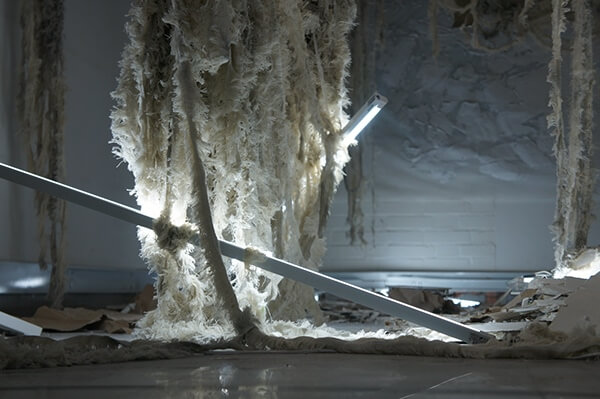
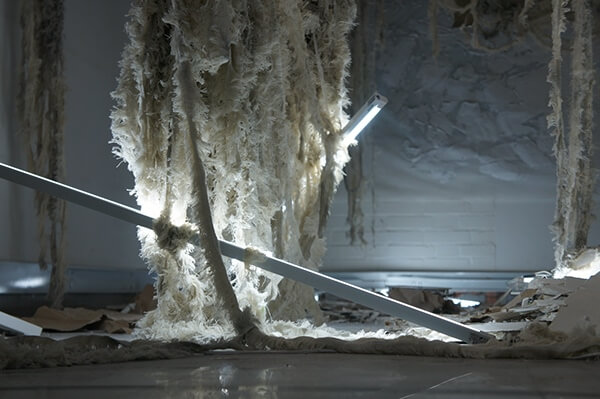

Background. Visual Designer from Universidad de Los Andes with a communication and product emphasis. Specialist in Interaction design from UC San Diego, California. He has a special interest in User Centered Design studies, UX, UI and design pieces narrative power. This has been a perfect way to improve his technological knowledge and digital work skills. From digital retouching software management to interactive visual projects development. Interested in interaction design, especially on products aesthetically and formally emphasized to reach innovation and capable of providing great user experiences.
Discovery. He has a strong interest in visual design, interfaces development projects and high impact communication products. From conceptual universe down to sketching, prototyping, mockuping and production, he has designed digital interfaces, web environments, brading projects, digital campaigns and interactive installations. Has experience creating aesthetic approaches according to design's current trends; each one to acquire business' validity, credibility and competitiveness within new markets.
Oh... and some additional non-CV info: he's a music lover, a film lover, a beer lover and a good coffe lover!
This portfolio and all its contents were designed and developed by him.
If you haven't see the CV yet, please check it out here


 
